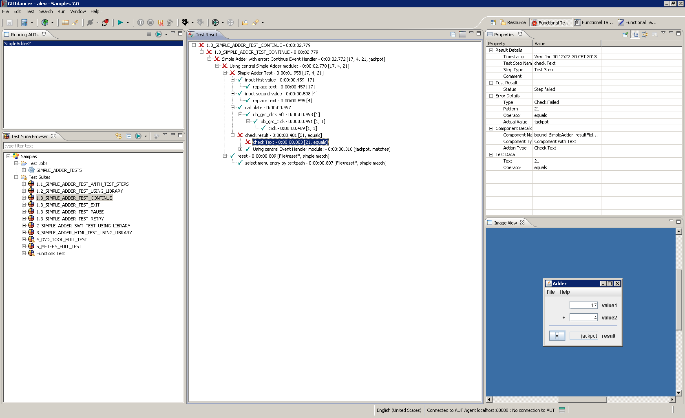

5.1.2 The Functional Test Execution Perspective
In the Functional Test Execution Perspective , you can see the following (5.2):
- The Test Suite Browser
- The Test Result View
- The Properties View
- The Image View
Figure 5.2: Functional Test Execution Perspective
|  |
You cannot edit in the Functional Test Execution Perspective , but you can see the results of tests that have been started interactively..
Copyright BREDEX GmbH 2014. Made available under the Eclipse Public License v1.0.